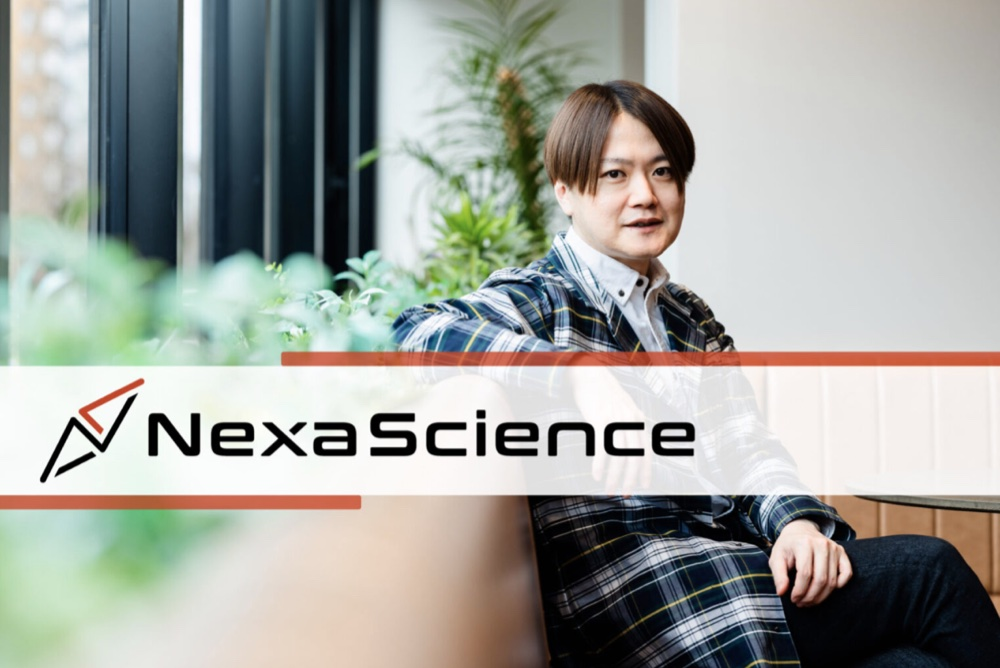

2026年4月24日、起業家向けメディア「venture.jp」に当社代表取締役CEO 牛久 祥孝のインタビュー記事（#654）が掲載されました。
AIロボット科学者によって日本の研究開発を加速し、研究・知財・事業化を一気通貫で繋ぐという当社のビジョンや、創業の経緯、今後の展望についてお話ししています。
詳しくは元記事をご覧ください。
出典：venture.jp
2026.04.24

2026年4月24日、起業家向けメディア「venture.jp」に当社代表取締役CEO 牛久 祥孝のインタビュー記事（#654）が掲載されました。
AIロボット科学者によって日本の研究開発を加速し、研究・知財・事業化を一気通貫で繋ぐという当社のビジョンや、創業の経緯、今後の展望についてお話ししています。
詳しくは元記事をご覧ください。
出典：venture.jp